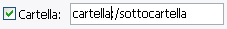
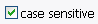

Il pannello Principale è dove le operazioni di rinomina vengono settate.
Devi fare le modifiche qui per fare qualsiasi rinomina.
[Bottoni]
[Ordine delle operazioni]
[campi di rinomina:
Cerca & Sostituisci/Modifica/Muovi Inserisci Modifica la lunghezza]
BUTTONI:
I bottoni inseriranno un po' di testo nello spazio di testo. Quando il pulsante Anteprima
viene premuto, il testo si trasformerà nell'operazione richiesta. Per esempio, attivando la il campo
Prefisso e cliccando su data, il codice ':date:' apparirà nel campo,
tale codice sarà trasformato nella data attuale quando si rinomineranno gli oggetti. Questo
permette una grande flessibilità, in quanto puoi mescolare operazioni e testo. Così se vuoi
avere un separatore tra il prefisso e il nome originale, basta premere il pulsante '_', cosicche lo spazio ora
contenga ':date:_', assumendo che oggi sia il 6 agosto 1223 e che il fail rinominato si chiami file.ext,
il file verrà rinominato come: 08-06-1223_file.ext
Si possono mettere quante operazione si desideri, fino a che il nome totale dell'oggetto non supera i
255 caratteri.
Un testo di questo tipo è perfettamente valido:
:numb:_some text_:date:_:time:_:track:-:performer:-:title:
Il bottone sottocartella inserisce un separatore all'interno del campo cartella.
Apparirà il testo ':/'. Nelle altri campi non farà nulla.
Il bottone numerazione inserirà una sequenza numerica automatica. Nelle impostazioni predefinite,
la numerazione parte da 1, incrementa di 1, e ha un riempimento 0 nel numero più grande
(cioé se ci sono 100 oggetti, conterà 001, 002, 003 ... 100). Puoi cambiare tutte le impostazioni
all'interno del pannello Numerazione.
I pulsanti Data e Ora inseriscono, rispettivamente, una data o ora preformattate.
Il metodo predefinito per la data è: MM-GG-AAAA (la predefinità americana), mentre l'ora è: OO:MM:SS
(formato 12 ore). Entrambi useranno ora e data correnti. Per cambiare le impostazioni usare il pannello
Data e Ora.
Il pulsante ID3 inserirà le informazioni ID3 ricevute dal file .mp3.
'IL' file .mp3 perché il programma guarderà ogni file e prenderà le info. Si può selezionare la sezione
usando il menu a tendina. Se il file mp3 ha perso le informazioni richieste uno spazio bianco verrà
messo al suo posto. Gli altri tipi di file ignoreranno questa impostazione.
ORDINE DELLE OPERAZIONI:
L'ordine in cui le varie operazione saranno eseguite durante dal programma. E' differente dall'ordine
che hanno nell'interfaccia (ma più logico, no?), così ho pensato di mostrare la lista qui.
- modifica la lunghezza
- Cerca e Sostituisci / Modifica / Muovi
- Prefisso
- Suffisso
- Inserisci
- Cartella
CAMPI DI RINOMINA:
Questo è il cuore di Métamorphose. Puoi modificare le impostazioni qui per poter rinominare.
Qui puoi decidere quale parte del nome dell'oggetto verrà modificata. Se
'Nome' is attivo, il nome delle cartelle e dei file saranno modificabili. Se estensione è attivo
l'estensione potrà essere modificata.

Questo permette di aggiungere una cartella in cui mettere gli oggetti rinominati. Potrai aggiungere sottocartelle
con il pulsante 'sottocartella'. Potrai anche usare tutti gli altri bottoni che sono stati descritti finora.
Aggiunge un prefisso all'oggetto.
Aggiunge un suffisso all'oggetto.
Questa è una funzione davvero potente che permette di cercare e poi modificare un testo nel nome
per poi modificarlo in qualche modo. Molte operazione sono fatte semplicemente usando questa funzione.
Puoi cercare nel nome un certo testo, usando espressioni regolari, o per posizione. Puoi rimpiazzare
il testo completamente, modificare lo stile, o movendolo in un'altra posizione.
Il testo da cercare. Puoi inserire qualsiasi carattere, cosi per cercare uno spazio,
premi semplicemente la barra spaziatrice. Se questo campo è lasciato vuoto l'intero nome sarà selezionato.

Selezionare questo se vuoi che la ricerca sia case-sensitive.
Cerca con una espressione regolare. Ogni porzione di testo che segue quelle regole sarà selezionato. I spuntato
rende la ricerca case-insensitive, U attiva invece la modalità Unicode (per poter rendere editabili caratteri non-ascii
come 'é' con cose tipo \w).

Cerca per determinato insiemi di caratteri. ^ cercherà ogni carattere non nell'insieme,
[a-z] cercherà ogni carattere alfabetico (MAIUSCOLO e minuscole comprese), e [0-9] selezionerà tutti i numeri.
Lo puoi usare anche senza definire un'espressione regolare. Altrimenti l'espressione regolare sarà compilata così:
'(espressione regolare) | (insieme di caratteri)'.
Anche [a-z] non è realmente '[a-z]', è '[^\W\d]' per una appropriata ricerca in Unicode.
Cerca per posizione.Il primo indica da dove partire. 0 è sempre il primo carattere del nome.
Quanti caratteri selezionare. Non c'é da preoccuparsi se il numero di caratteri supera la lunghezza del nome.
Determina se pertire dall'inizio o la fine del nome. se fine è attivo, allora
il valore della Posizione cambia automaticamente a seconda della Lunghezza.
Sostituisce ogni parte selezionata con un testo specifico o una operazione. Se si stanno usando espressioni regolari, puoi usare
backreferences (i.e. scrivere "\1" senza le virgolette).
Modifica lo stile dei nomi.

Muove la parte selezionata in una certa posizione.
Usa una posizione fissa. 0 mette la selezione all'inizio del nome, -1 alla fine.
Usa un testo specifico come posozione dello spostamento. Puoi decidere se mettere la selezione prima o
dopo, o di sostituire il testo. Se non viene trovato nulla, non succede niente. L'uso di espressioni regolari è permesso.
|
Usa questo per inserire testo o una operazione in un punto specifico del nome.
Specifica un punto specifico in cui inserirlo. 0 = primo carattere,
1 = secondo, -1 l'ultimo.
|
Cambia la lunghezza del nome in vari modi.

Come modificare il nome. Riempimento aumenterà la lunghezza fino a una dimensione data, Taglia l'accorcerà,
e Entrambi, lì farà entrambi.
Cambia la dimensione a questa dimensione. Se stai usando Riempimento e il nome è così o maggiore,
o se il nome è minore e stai usando Taglia, allora nulla sarà fatto. Usando Entrambi
i nomi diventeranno esattamente di questa misura.
Direzione in cui avviene la modifica.
Questo è il carattere da usare per il riempimento. Potrai usare qualsiasi carattere che il tuo computer permette.
Permette di scegliere un punto specifico in cui inserire lo riempimento. Se lasciato a 0, all'ora sarà la prima posizione
della direzione scelta. Se è diverso da 0 fuzionerà come inserisci in una posizione
(1 = secondo, -1 = ultimo), ignorando la direzione.
|